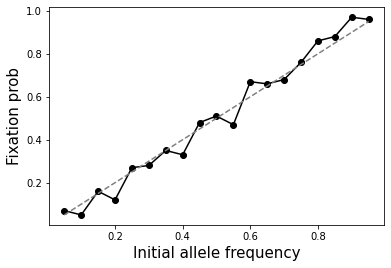
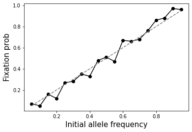

Activity: Exploring the Wright-Fisher model of genetic drift#
Below explore some basic questions related to genetic drift using the Wright-Fisher model.
Examples here use two basic functions:
SimulateAlleleFreq(N, p0, g): simulates the alternate allele frequency for a single bi-allelic variant in a population size of \(N\) people (\(2N\) alleles) for \(g\) generations, starting with freqency \(p0\). Assumes a constant population size.SimulateAlleleFreq_VarPopSize(Nvals, p0=0.5): simulates alternate allele frequency, based on a variable population size according toNvals. For example[(1000, 5), (2000, 10)]will simulate 5 generations with population size 1000 and 10 generations with population size 2000.
which we use to generate plots illustrating the process of drift under different conditions.
Below we experiment to see how drift changes as we vary the parameters (\(N\), \(p0\), or \(g\)).
Functions for simulating drift#
%pylab inline
import numpy as np
def SimulateAlleleFreq(N=10000, p0=0.5, g=10):
"""
Simulate the alternate allele frequency of a single
bi-allelic variant over one more generations.
All variants are assumed to be neutral
Parameters
----------
N : int or list of [(int, int)]:
Use a constant population size of N
(2N alleles are simulated each generation)
p0 : float
Frequency of the alternate allele in generation 0
g : int
Number of generations to simulate.
Returns
-------
freqs : list of float
Returns the alternate allele frequency at each generation
"""
freqs = [p0]
current_p = p0
for i in range(g):
x = np.random.binomial(2*N, current_p)
current_p = x/(2*N)
freqs.append(current_p)
return freqs
def SimulateAlleleFreq_VarPopSize(Nvals, p0=0.5):
"""
Simulate alternate allele frequency of a single
bi-allelic variant under variable population size
Parameters
----------
Nvals : list of [(int, int)]
For each tuple the first value gives the population size
and the second value gives the number of generations.
For example [(1000, 5), (2000, 10)] will simulate
5 generations with population size 1000 and 10 generations
with population size 2000
p0 : float
Frequency of the alternate allele in generation 0
Returns
-------
freqs : list of float
Returns the alternate allele frequency at each generation
"""
freqs = []
current_freq = p0
for i in range(len(Nvals)):
N, g = Nvals[i]
f = SimulateAlleleFreq(N=N, p0=current_freq, g=g)
if i != len(Nvals)-1:
freqs.extend(f[0:-1])
current_freq = f[-1]
else:
freqs.extend(f)
return freqs
---------------------------------------------------------------------------
ModuleNotFoundError Traceback (most recent call last)
Cell In[1], line 1
----> 1 get_ipython().run_line_magic('pylab', 'inline')
2 import numpy as np
4 def SimulateAlleleFreq(N=10000, p0=0.5, g=10):
File ~/miniconda3/envs/jbook/lib/python3.12/site-packages/IPython/core/interactiveshell.py:2480, in InteractiveShell.run_line_magic(self, magic_name, line, _stack_depth)
2478 kwargs['local_ns'] = self.get_local_scope(stack_depth)
2479 with self.builtin_trap:
-> 2480 result = fn(*args, **kwargs)
2482 # The code below prevents the output from being displayed
2483 # when using magics with decorator @output_can_be_silenced
2484 # when the last Python token in the expression is a ';'.
2485 if getattr(fn, magic.MAGIC_OUTPUT_CAN_BE_SILENCED, False):
File ~/miniconda3/envs/jbook/lib/python3.12/site-packages/IPython/core/magics/pylab.py:159, in PylabMagics.pylab(self, line)
155 else:
156 # invert no-import flag
157 import_all = not args.no_import_all
--> 159 gui, backend, clobbered = self.shell.enable_pylab(args.gui, import_all=import_all)
160 self._show_matplotlib_backend(args.gui, backend)
161 print(
162 "%pylab is deprecated, use %matplotlib inline and import the required libraries."
163 )
File ~/miniconda3/envs/jbook/lib/python3.12/site-packages/IPython/core/interactiveshell.py:3719, in InteractiveShell.enable_pylab(self, gui, import_all, welcome_message)
3692 """Activate pylab support at runtime.
3693
3694 This turns on support for matplotlib, preloads into the interactive
(...)
3715 This argument is ignored, no welcome message will be displayed.
3716 """
3717 from IPython.core.pylabtools import import_pylab
-> 3719 gui, backend = self.enable_matplotlib(gui)
3721 # We want to prevent the loading of pylab to pollute the user's
3722 # namespace as shown by the %who* magics, so we execute the activation
3723 # code in an empty namespace, and we update *both* user_ns and
3724 # user_ns_hidden with this information.
3725 ns = {}
File ~/miniconda3/envs/jbook/lib/python3.12/site-packages/IPython/core/interactiveshell.py:3665, in InteractiveShell.enable_matplotlib(self, gui)
3662 import matplotlib_inline.backend_inline
3664 from IPython.core import pylabtools as pt
-> 3665 gui, backend = pt.find_gui_and_backend(gui, self.pylab_gui_select)
3667 if gui != None:
3668 # If we have our first gui selection, store it
3669 if self.pylab_gui_select is None:
File ~/miniconda3/envs/jbook/lib/python3.12/site-packages/IPython/core/pylabtools.py:338, in find_gui_and_backend(gui, gui_select)
321 def find_gui_and_backend(gui=None, gui_select=None):
322 """Given a gui string return the gui and mpl backend.
323
324 Parameters
(...)
335 'WXAgg','Qt4Agg','module://matplotlib_inline.backend_inline','agg').
336 """
--> 338 import matplotlib
340 if _matplotlib_manages_backends():
341 backend_registry = matplotlib.backends.registry.backend_registry
ModuleNotFoundError: No module named 'matplotlib'
Example simulations#
# Example 1 - Perform 10 simulations
# and plot allele frequency over time
numsim = 10
numgen = 10000
p0 = 0.5
popsize = 10000
fig = plt.figure()
ax = fig.add_subplot(111)
for i in range(numsim):
freqs = SimulateAlleleFreq(N=popsize, p0=p0, g=numgen)
ax.plot(range(numgen+1), freqs, color="black", linewidth=0.5, alpha=0.5)
ax.axhline(y=p0, color="gray")
ax.set_xlabel("Generation", size=15)
ax.set_ylabel("Alternate allele freq.", size=15);
# Example 2 - Population bottleneck
numsim = 10
Nvals = [(10000, 1000), (50, 500)]
p0 = 0.5
popsize = 10000
fig = plt.figure()
ax = fig.add_subplot(111)
for i in range(numsim):
freqs = SimulateAlleleFreq_VarPopSize(Nvals, p0=p0)
ax.plot(range(len(freqs)), freqs, color="black", linewidth=0.5, alpha=0.5)
ax.axhline(y=p0, color="gray")
ax.set_xlabel("Generation", size=15)
ax.set_ylabel("Alternate allele freq.", size=15);
# Example 3 - Side by side of big vs. small population
numsim = 10
numgen = 10000
p0 = 0.5
fig = plt.figure()
fig.set_size_inches((8, 4))
popsize = 10000
ax = fig.add_subplot(121)
for i in range(numsim):
freqs = SimulateAlleleFreq(N=popsize, p0=p0, g=numgen)
ax.plot(range(numgen+1), freqs, color="black", linewidth=0.5, alpha=0.5)
ax.axhline(y=p0, color="gray")
ax.set_title("N=%s"%popsize)
ax.set_xlabel("Generation", size=15)
ax.set_ylabel("Alternate allele freq.", size=15);
ax.set_ylim(bottom=0, top=1)
popsize = 100000
ax = fig.add_subplot(122)
for i in range(numsim):
freqs = SimulateAlleleFreq(N=popsize, p0=p0, g=numgen)
ax.plot(range(numgen+1), freqs, color="black", linewidth=0.5, alpha=0.5)
ax.axhline(y=p0, color="gray")
ax.set_title("N=%s"%popsize)
ax.set_xlabel("Generation", size=15)
ax.set_ylabel("Alternate allele freq.", size=15);
ax.set_ylim(bottom=0, top=1)
fig.tight_layout()
# Example 4 - Side by side of allele freq effect
numsim = 10
numgen = 20000
popsize = 10000
fig = plt.figure()
fig.set_size_inches((8, 4))
p0 = 0.5
ax = fig.add_subplot(121)
for i in range(numsim):
freqs = SimulateAlleleFreq(N=popsize, p0=p0, g=numgen)
ax.plot(range(numgen+1), freqs, color="black", linewidth=0.5, alpha=0.5)
ax.axhline(y=p0, color="gray")
ax.set_title("p0=%s"%p0)
ax.set_xlabel("Generation", size=15)
ax.set_ylabel("Alternate allele freq.", size=15);
ax.set_ylim(bottom=-0.1, top=1.1)
p0 = 0.2
ax = fig.add_subplot(122)
for i in range(numsim):
freqs = SimulateAlleleFreq(N=popsize, p0=p0, g=numgen)
ax.plot(range(numgen+1), freqs, color="black", linewidth=0.5, alpha=0.5)
ax.axhline(y=p0, color="gray")
ax.set_title("p0=%s"%p0)
ax.set_xlabel("Generation", size=15)
ax.set_ylabel("Alternate allele freq.", size=15);
ax.set_ylim(bottom=-0.1, top=1.1)
fig.tight_layout()
Discussion questions#
What eventually happens to all variants if you run the simulation for a large enough number of generations?
If you run for enough generations, eventually the alternate allele frequency will go to either 0 or 1 (“fixation” of either the original or the alternate allele). Once that happens, the frequency will remain constant (assuming no new mutations).
Assuming constant population size, how does the population size (\(N\)) affect the time to fixation (reaching an allele frequency of 1) of a new allele (frequency 1/(2N))? You may answer qualitatively. But extra kudos if you are able to work out the exact relationship between \(N\) and fixation time based on the simulations :).
Fixation happens faster in smaller populations. Average fixation time is \(4N\). See below.
What will be the effect of a severe population bottleneck (sudden reduction in population size)?
See example plot provided. Allele frequencies will dramatically fluctuate and go toward 0 or 1 very quickly.
How does the probability of fixation (reaching an allele frequency 1) depend on the initial allele frequency?
Probability of fixation is equal to the initial allele frequency. See below.
How does the time to fixation depend on the initial allele frequency?
Overall, fixation happens faster for more common alleles. The relationship is a bit more complicated though. \(T_{fix} = -4*N*\frac{(1-p_0)\ln(1-p_0)}{p_0}\). See below.
# Question 2 - time to fixation of a new allele
# as a function of population size
def GetFixationTime(N=10000, p0=0.5, maxg=10):
"""
Parameters
----------
N : int or list of [(int, int)]:
Use a constant population size of N
(2N alleles are simulated each generation)
p0 : float
Frequency of the alternate allele in generation 0
maxg : int
Maximum number of generations to simulate.
Returns
-------
t : int
Generation number at which fixation (freq=1) is reached
If fixation is not reached, return None
"""
current_p = p0
for t in range(maxg):
if current_p == 1:
return t
if current_p == 0:
return None
x = np.random.binomial(2*N, current_p)
current_p = x/(2*N)
return None
numsim = 1000
maxg = 100000
mean_fixation_times = []
Ns = [1, 10, 50, 100]
for N in Ns:
fts = [GetFixationTime(N=N, p0=1/(2*N), maxg=maxg) for i \
in range(numsim)]
fts = [item for item in fts if item is not None]
mean_fixation_times.append(np.mean(fts))
fig = plt.figure()
ax = fig.add_subplot(111)
ax.plot(Ns, mean_fixation_times, marker="o", color="black");
ax.plot(Ns, [4*item for item in Ns], linestyle="dashed", color="gray")
ax.set_xlabel("Population size (N)", size=15)
ax.set_ylabel("Mean fixation time", size=15);
# Questions 4 and 5 - time to / prob. of fixation of a new allele
# as a function of allele freq
numsim = 100
maxg = 100000
mean_fixation_times = []
fixation_probs = []
N = 100
ps = np.arange(0.05, 1, 0.05)
for p0 in ps:
fts = [GetFixationTime(N=N, p0=p0, maxg=maxg) for i \
in range(numsim)]
fts = [item for item in fts if item is not None]
if len(fts) > 0:
mean_fixation_times.append(np.mean(fts))
else: mean_fixation_times.append(np.nan)
fixation_probs.append(len(fts)/numsim)
fig = plt.figure()
ax = fig.add_subplot(111)
ax.plot(ps, mean_fixation_times, marker="o", color="black");
ax.plot(ps, [-4*N*(1-item)*np.log(1-item)/item for item in ps], linestyle="dashed", color="gray")
ax.set_xlabel("Initial allele frequency", size=15)
ax.set_ylabel("Mean fixation time", size=15);
fig = plt.figure()
ax = fig.add_subplot(111)
ax.plot(ps, fixation_probs, marker="o", color="black");
ax.plot(ps, ps, linestyle="dashed", color="gray")
ax.set_xlabel("Initial allele frequency", size=15)
ax.set_ylabel("Fixation prob", size=15);
 
